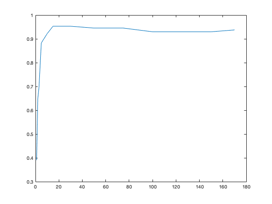
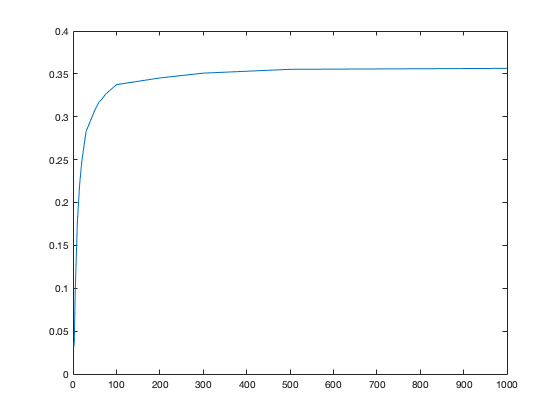
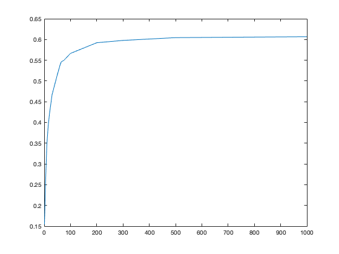

Contents
MyMainScript
tic;
Your code here
dim = 92*112;
num_images_train = 32*6;
num_images_test = 32*4;
training_set = zeros(dim, num_images_train);
counter = 1;
train_mean = zeros(dim,1);
train_labels = [];
Creating the training set
for person = 1:32
folder_name = strcat("s",num2str(person));
folder_path = strcat(strcat('../../att_faces/',folder_name),"/");
for index = 1:6
file_path = strcat(folder_path, strcat(num2str(index),'.pgm'));
image = imread(convertStringsToChars(file_path));
training_set(:,counter) = image(:);
counter = counter + 1;
train_labels = [train_labels person];
train_mean = train_mean + double(image(:));
end
end
Creating the test set
testing_set = zeros(dim, num_images_test);
test_labels = [];
counter = 1;
for person = 1:32
folder_name = strcat("s",num2str(person));
folder_path = strcat(strcat('../../att_faces/',folder_name),"/");
for index = 7:10
file_path = strcat(folder_path, strcat(num2str(index),'.pgm'));
image = imread(convertStringsToChars(file_path));
testing_set(:,counter) = image(:);
counter = counter + 1;
test_labels = [test_labels person];
end
end
Processing the training set
train_mean = train_mean/counter;
training_set = training_set - train_mean;
testing_set = testing_set-train_mean;
Computing Accuracies using Eigen Decomposition
k_vals = [1, 2, 3, 5, 10, 15, 20, 30, 50, 75, 100, 150, 170];
accuracies = zeros(1,size(k_vals,2));
iter = 1;
for k = k_vals
accuracies(1, iter) = face_recog_eig(training_set, testing_set,1, k, test_labels, train_labels);
iter = iter + 1;
end
Plotting the Accuracies
plot(k_vals, accuracies);

Computing Accuracies using SVD
k_vals = [1, 2, 3, 5, 10, 15, 20, 30, 50, 75, 100, 150, 170];
accuracies = zeros(1,size(k_vals,2));
iter = 1;
for k = k_vals
accuracies(1, iter) = face_recog_svd(training_set, testing_set,1, k, test_labels, train_labels);
iter = iter + 1;
end
Plotting the Accuracies
plot(k_vals, accuracies);
Creating the training set (Yale Database)
dim = 192*168;
training_set = [];
testing_set = [];
folders = dir('../../CroppedYale/');
test_labels = [];
train_labels = [];
train_mean = zeros(dim,1);
folders = folders(3:end);
folders = {folders([folders.isdir]).name};
person = 1;
for folder = folders
if folder == ".DS_Store"
continue
end
counter = 0;
test = 0;
folder_path = strcat('../../CroppedYale/',folder);
folder_path = strcat(folder_path,"/");
files = dir(folder_path);
files = {files.name};
files = files(3:end);
for item = files
if item == ".DS_Store"
continue
end
file_name = strcat(folder_path,item);
image = imread(convertStringsToChars(file_name));
if test == 0
training_set = [training_set image(:)];
train_mean = train_mean + double(image(:));
train_labels = [train_labels person];
else
testing_set = [testing_set image(:)];
test_labels = [test_labels person];
end
counter = counter + 1;
if counter == 40
test = 1;
end
end
person = person + 1;
end
Processing the training set
train_mean = train_mean/size(training_set,2);
training_set = double(training_set) - train_mean;
testing_set = double(testing_set) - train_mean;
Computing Accuracies using SVD for Yale
k_vals = [1, 2, 3, 5, 10, 15, 20, 30, 50, 60, 65, 75, 100, 200, 300, 500, 1000];
accuracies = zeros(1,size(k_vals,2));
iter = 1;
for k = k_vals
accuracies(1, iter) = face_recog_svd(training_set, testing_set,1, k, test_labels, train_labels);
iter = iter + 1;
end
Plotting the Accuracies
plot(k_vals, accuracies);

Computing Accuracies after removing first three eigenvectors
k_vals = [1, 2, 3, 5, 10, 15, 20, 30, 50, 60, 65, 75, 100, 200, 300, 500, 1000];
accuracies = zeros(1,size(k_vals,2));
iter = 1;
for k = k_vals
accuracies(1, iter) = face_recog_svd(training_set, testing_set,4, k+3, test_labels, train_labels);
iter = iter + 1;
end
Plotting the Accuracies
plot(k_vals, accuracies);
toc;
Elapsed time is 132.997808 seconds.
